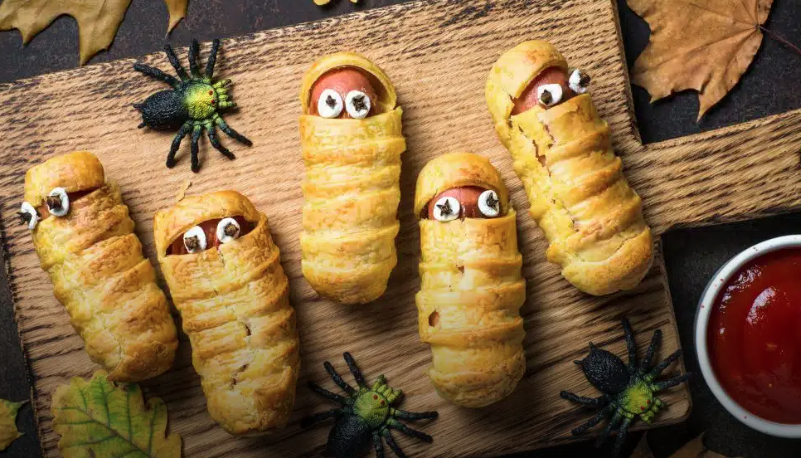

Descubra como surgiu uma das festas mais assustadoras do mundo e suas tradições.
Saiba MaisVeja ideias criativas e assustadoras para impressionar seus amigos no Halloween.
Ver FantasiasConfira receitas e guloseimas temáticas para deixar sua festa ainda mais divertida.
Explorar ReceitasO Halloween, ou Dia das Bruxas, tem suas raízes na festividade celta chamada Samhain, que marcava o fim do verão e o início do inverno. Durante o Samhain, os celtas acreditavam que os espíritos dos mortos retornavam à Terra, e a festa era uma forma de homenagear esses mortos e celebrar as colheitas. A Igreja, ao condenar o Samhain, alterou o calendário, mudando o Dia de Todos os Santos para o dia 1 de novembro, mas mantendo a véspera como All Hallows' Eve, que deu origem ao termo Halloween. Com a colonização das terras americanas, a tradição foi incorporada à cultura americana, especialmente nos Estados Unidos, onde se popularizou como uma celebração com fantasias, doces e decorações temáticas.

Deliciosas múmias feitas com facilidade.
Deliciosos e horripilantes dedos feitos com facilidade.
Deliciosas Abóboras feitas com facilidade.